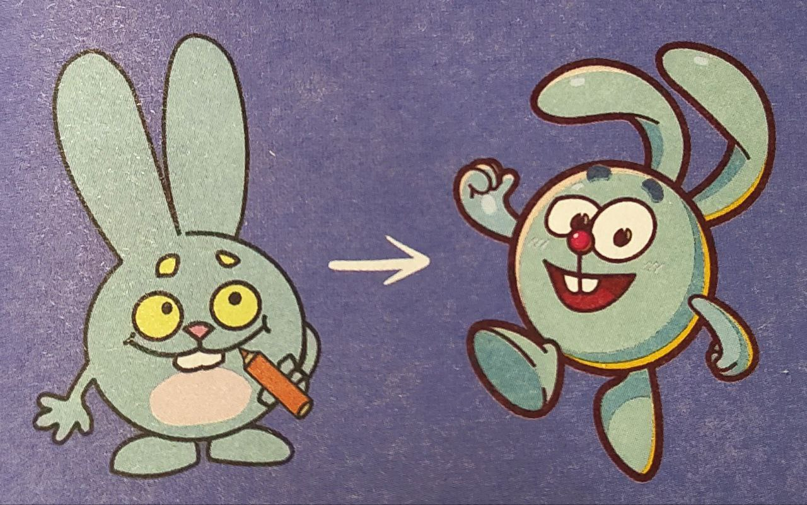
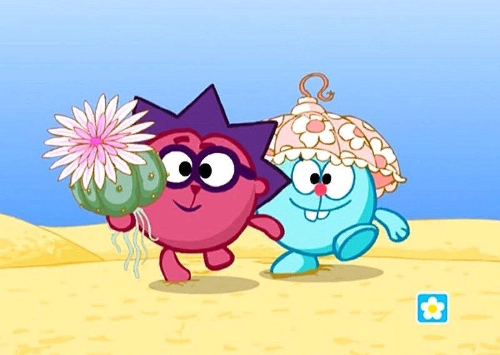

Крош: «Ёлки-иголки!»

Возраст: 9 лет.
Рост: 95 см с ушами. И не спрашивайте, сколько «без»: без ушей это уже не Крош.
Характер: гипержизнерадостный.
Озвучивает: Антон Виноградов. В первых эпизодах он говорил и за Ёжика, поэтому в серии «Скамейка» у того такой непривычный голос.
Самый первый
Первым Смешариком, кто с любопытством сунул нос в нашу реальность, был Крош. Кому, как не ему, отправ¬ляться на разведку? Под проект «Сластёны» Салават Шайхинуров нарисовал круглого кролика с ушами - не для анимации, а для игры-викторины с конфетами.
Крош энергично перепрыгнул из «Сластён» в «Смешариков», практически не изменившись. Разве что звали его Грызлик, а жил он в домике-бочке на берегу большого озера. На первых набросках у него было розовое пузико, но в остальном круглость и ушастость как-то сразу проявилась. Ну и характер тоже.

За основу его образа мы поначалу брали работу Георгия Вицина в мультфильме «Мешок яблок» и немного Кролика из советского «Винни - Пуха», говорит озвучивший непоседу Антон Виноградов. В полнометражных «Смешариках» добавили безумства Кролика Роджера. Основная сложность в воплощении этого образа – совместить бесшабашность, активность с душевностью и теплотой.
Лидер
Любимый способ действовать – метод ненаучного тыка. Гиперактивный Крош претендует на лидерство (в 2012 году он даже записал новогоднее обращение на фоне Кремля). Безалаберный, трогательный, он не только основной траблмейкер, но и главный краш проекта. В англоязычной версии «Смешариков» его так и зовут – Krash (почти crush).
Луший друг
Крош и Ёжик — лучшие друзья. При этом стали они лучшими друзьями ещё в детстве. В их паре Крош всегда брал инициативу, придумывал и воплощал планы. При этом Ёжик помогал Крошу и нередко контролировал его, так как Кроша часто заносило. Действия Кроша и Ёжика стали толчком к путешествию в Мегаполис. Когда супергерои Люсьена попали в тюрьму, именно Крош первый заметил, что Ёжик исчез. Он очень обрадовался, когда Ёжик нашёлся.

«Я тебе больше никогда ничего не смогу рассказать! Никогда! Потому что у тебя язык… без костей!» — Ёжик
Несмотря на это, иногда Крош и Ёжик расходятся во мнениях. Часто причиной раздоров является увлечение коллекционирование Ёжика. Одна из самых крупных ссор произошла именно из-за коллекции фантиков. Также часто Крош и Ёжик не могут понять друг друга, так как Крош предпочитает активный отдых, а Ёжик — пассивные увлечения.
Забавный факт
Крош - адепт общества плоскоземельщиков. Он верит в плоскую Землю лишь потому, что без черепах и слонов глупый шарик бесцельно болтается в космосе. А это неинтересно! При этом Деда Мороза считает выдумкой.